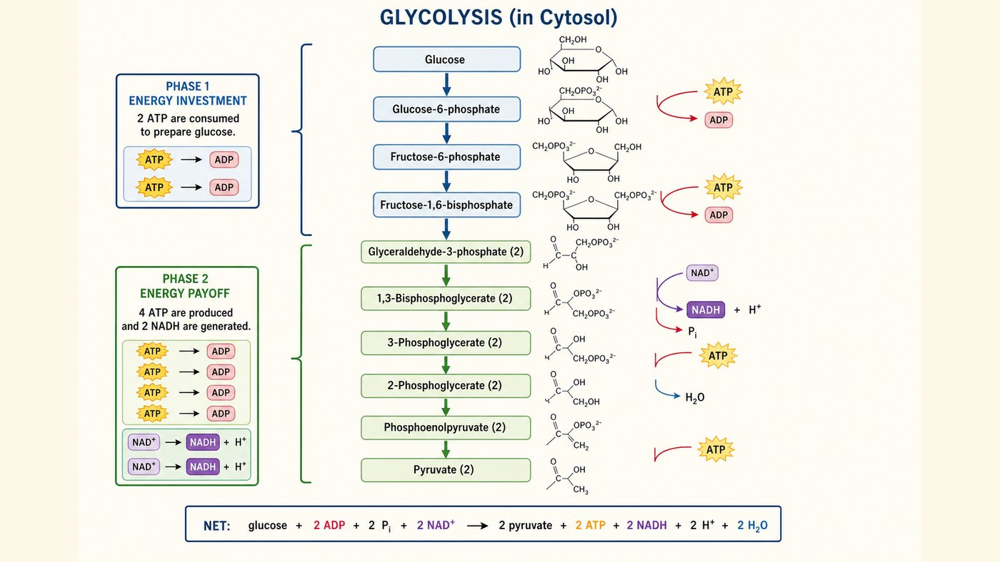
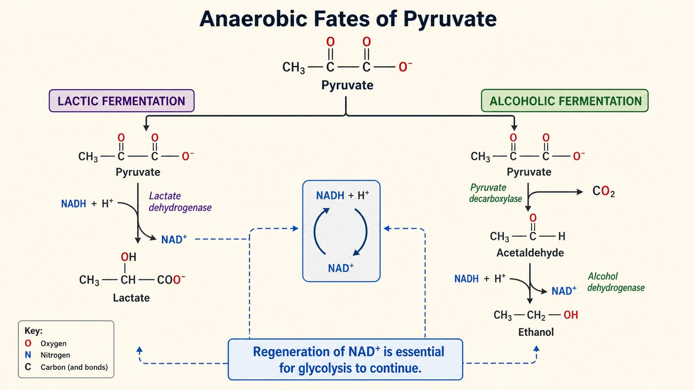

第 13 週
Đường phân (Glycolysis)
Bắt đầu chương năng lượng
ATP、氧化還原、能量耦合。今天燒第一個燃料:葡萄糖。
Từ vựng · 不用背,看過就好
| 中文 | Tiếng Việt | English | 中文 | Tiếng Việt | English |
|---|---|---|---|---|---|
| 糖解作用 | Đường phân | Glycolysis | 發酵 | Sự lên men | Fermentation |
| 丙酮酸 | Pyruvate | Pyruvate | 乳酸 | Lactate | Lactate |
| 投資期 | GĐ đầu tư | Prep phase | 醣質新生 | Tân tạo glucose | Gluconeogenesis |
| 收穫期 | GĐ thu hồi | Payoff phase | 肝醣分解 | Phân giải glycogen | Glycogenolysis |
| 受質層次磷酸化 | Phosphoryl mức cơ chất | SLP | 丙酮酸激酶 | Pyruvate kinase | Pyr. kinase |
10 bước, 2 giai đoạn

投資期(前5步):花掉 2 ATP。 | 收穫期(後5步):做 4 ATP + 2 NADH。
GĐ đầu tư (5 bước đầu): tốn 2 ATP. | GĐ thu hồi (5 bước sau): tạo 4 ATP + 2 NADH.
Đừng quên nhân đôi
忘記 ×2 是最常見的錯。做出的是 4,不是 2。
3 điểm điều hòa
| 酵素 | 位置 | 作用 |
|---|---|---|
| 己糖激酶 | 第 1 步 | 鎖進細胞 |
| PFK-1 | 第 3 步 | 最重要的閥門 |
| 丙酮酸激酶 | 第 10 步 | 最後一步 |
PFK-1:ATP 多就抑制它。能量夠了不用再燒糖。這是第 7 週的回饋抑制。
PFK-1: nhiều ATP thì bị ức chế. Đủ năng lượng thì không cần đốt đường nữa.
3 con đường của pyruvate
→ 乙醯CoA。進循環。
Có O₂ → acetyl-CoA
→ 乳酸。
Thiếu O₂ → lactate
→ 乙醇 + CO₂。
→ ethanol + CO₂

Mục đích: tái tạo NAD⁺
把 NADH 變回 NAD⁺。
讓糖解能繼續。
Tái tạo NAD⁺ → đường phân tiếp tục
乳酸、酒只是副產物。
Lactate/rượu chỉ là phụ
乳酸發酵不產 CO₂。酒精發酵才產。所以麵包會膨脹。
Vì sao học cái này
乳酸堆積。缺氧靠發酵。
Đau cơ: lactate
沒有粒線體,只能糖解。
Hồng cầu: chỉ đường phân
偏好糖解(Warburg)。
Ung thư: hiệu ứng Warburg
Bài tập: Sắp xếp
哪一期花 ATP?哪一期賺 ATP? Giai đoạn nào tốn / thu ATP?
Bài tập: Đúng hay sai
糖解淨產 4 個 ATP。
Đường phân tạo ròng 4 ATP.
PFK-1 是重要的調控點。
PFK-1 là điểm điều hòa quan trọng.
發酵的目的是再生 NAD⁺。
Mục đích lên men là tái tạo NAD⁺.
乳酸發酵會產生 CO₂。
Lên men lactate tạo ra CO₂.
想一想:激烈運動,為何產乳酸?
下週 · Tuần sau
Chu trình acid citric
▶ 課前:看詞彙表第 14 週(16 個詞)
Xem trước 16 từ của tuần 14
▶ 小測:下週前 10 分鐘,考今天的詞
Kiểm tra 5 câu
▶ 提示:今天學丙酮酸。下週變成乙醯CoA 進循環
Gợi ý: pyruvate → acetyl-CoA